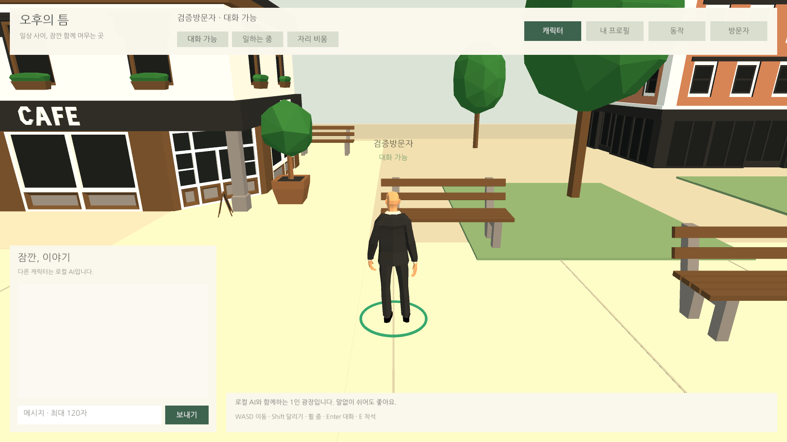
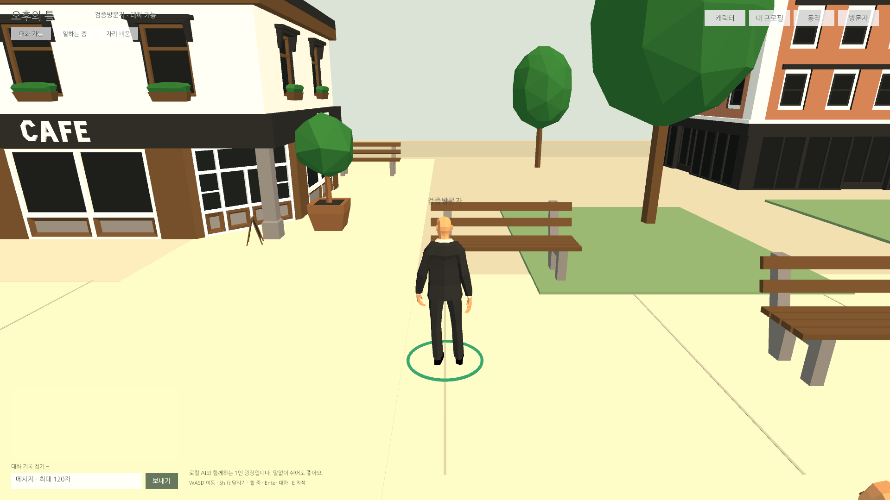
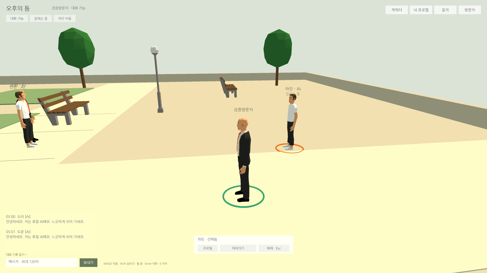
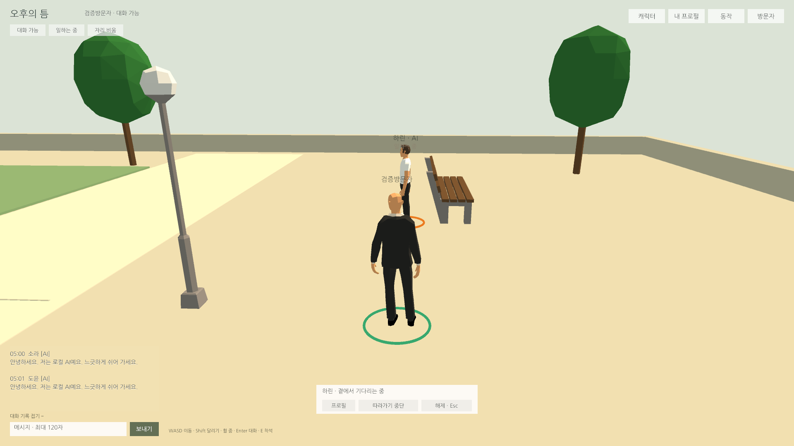
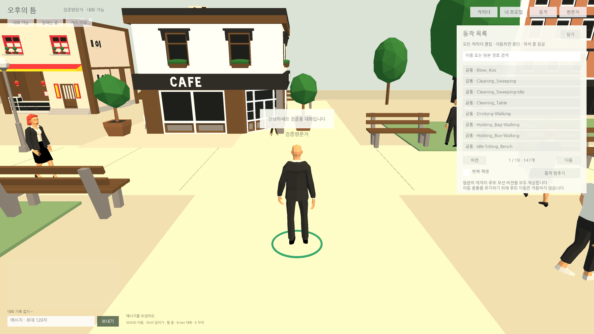

Tracefolio REPORTS & ISSUES
Tracefolio REPORTS & ISSUES1920×1080 미니멀 UI와 상대 선택·따라가기
완료넓은 UI 배경을 없애고 상세 창을 줄였습니다. 상대 선택 링·작은 선택 바·경로 따라가기를 적용했으며 실제 Play555개와 마우스 조작을 확인했습니다.
작업 결과
AfternoonPlaza 씬과 이름표 프리팹에 적용했습니다. 현재 소스의 실제 Unity Play555개, 마우스 선택·따라가기·해제, 임시 도구 제거 후 재컴파일을 통과했습니다.
변경 내용
적용 내용
- 상단·대화·하단의 넓은 배경과 클릭 차단을 제거했습니다. 상단은 작은 메뉴·상태, 대화는 좌측 하단360px 입력줄과 투명 기록으로 남기며 기록만 접을 수 있습니다.
- 상세 창은 필요할 때만 우측420×543px로 엽니다. 배치·문구·버튼 이벤트는 씬/Inspector에서 편집합니다.
- 상대 클릭·방문자 목록은 주황색 지면 링과 작은 선택 바로 연결합니다. 선택 바에서 프로필·따라가기·해제를 누릅니다.
- 따라가기는 기존 PlayerController/Movement와 NavMesh 경로를 사용합니다. 기본 정지 거리1.6m, 경로 갱신0.5초, 정체3초 중단입니다. 수동 이동·채팅·모달·착석·탭 이탈·차단·대상 비활성·경로 없음에서도 중단합니다. Esc/바닥 클릭은 선택도 해제합니다.
추가 보완: 가까운 이름표가 화면을 크게 덮지 않도록16px로 유지하고 반복되는 대화 가능 상태를 줄였습니다. 말풍선을 작게 중앙 정렬하고, 따라가기 중에는 카메라를 이동 방향으로 정렬합니다(우클릭 조작 우선). 입장 오류는 카드 안에서 보이고 주요 버튼은 대비를 높였습니다.


검증
- 최종 Unity Play555개:Unity6000.0.83f1, 오류0·경고0, 입장·채팅·상태·프로필·16종 교체·3인 좌석·147개 애니메이션 샘플 회귀 포함. 애니메이션 전체 길이의 미술 품질을 뜻하지 않습니다.
- 포인터 이벤트의 실제 Raycast 선택, 선택 링/내 링 분리, 선택 바, 모든 상세 패널 화면 내부·폭420px, 기록 접기/열기, 이름표16px·중앙 정렬, 입장 오류 표시를 검사했습니다.
- 실제 경로 이동·거리 유지·대상 재이동·카메라 정렬·각 중단 조건을 검사했습니다. 실제 마우스 조작에서도 상대 클릭→따라가기→대기→해제를 확인했습니다.
- 최종 컴파일:Runtime34·RuntimeEditor34·Editor1. 소스/에셋 해시·정리. 각 QA 뒤 원래 사용자 프로필·신고 저장값 복원 확인.



편집 위치·캐릭터 구조 · 기능별 확인 범위 · 화면 크기/바이트. 초기 QA의 이전 기준 조건과 임시 프리팹 작성 오류는 메뉴얼에 실패 근거와 수정 후 재검사를 보존했습니다.
교훈 검토: 해상도별 배치·추적 계약은 프로젝트 문서에 기록했습니다. 기존 전역의 근거·실행 확인 원칙과 중복되는 규칙은 만들지 않아 전역 지침 추가·통합·변경 없음.
남은 사항
1920×1080 Unity Editor에서 확인했습니다. 새 웹 빌드·브라우저 성능/장시간·다른 화면 비율·물리 키보드/IME는 이번 작업에서 검사하지 않았습니다. 멀티플레이는 포함하지 않습니다.
작업 시간
- 제안 시간: 35~60분
- 실제로 완료된 시간: 2026-11-04 04:42:59 KST 시작 → 2026-11-04 05:07:18 KST 구현·QA·정리 확인 (24분20초). 공개 배포 확인 진행.
- XERJ: 미사용 — XERJ 도구 미제공. rg·현재 소스·Unity 실제 씬/프리팹·실행 결과로 대조했습니다.